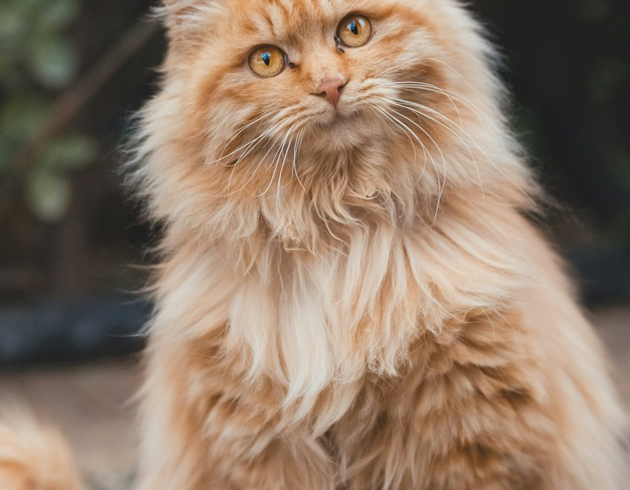

Banho e tosa
Higiene, tosa higiênica ou estética e hidratação com paciência e segurança. Ideal para deixar o peludo limpo, cheiroso e confortável.
Agendar banho e tosaCuidado completo
Estética, saúde e conveniência para cães e gatos em Presidente Prudente. Escolha o serviço e agende direto no WhatsApp.
Higiene, tosa higiênica ou estética e hidratação com paciência e segurança. Ideal para deixar o peludo limpo, cheiroso e confortável.
Agendar banho e tosa
Acompanhamento de saúde, orientação ao tutor e atendimento clínico em ambiente climatizado, com foco no bem-estar do animal.
Agendar consulta
Prevenção em dia e medicamentos veterinários para complementar o cuidado, com orientação de profissionais habilitados.
Falar sobre vacinas
Linha de alimentação e itens para o dia a dia: conforto, higiene e brincadeiras, com produtos de primeira linha.
Consultar produtos
Buscamos e levamos o seu pet com segurança, para encaixar o banho ou a consulta na sua rotina em Presidente Prudente.
Agendar leva e traz
Além da rotina, preparamos os pets para datas comemorativas — como as campanhas que você já vê no Instagram do Sato.
Agendar estética